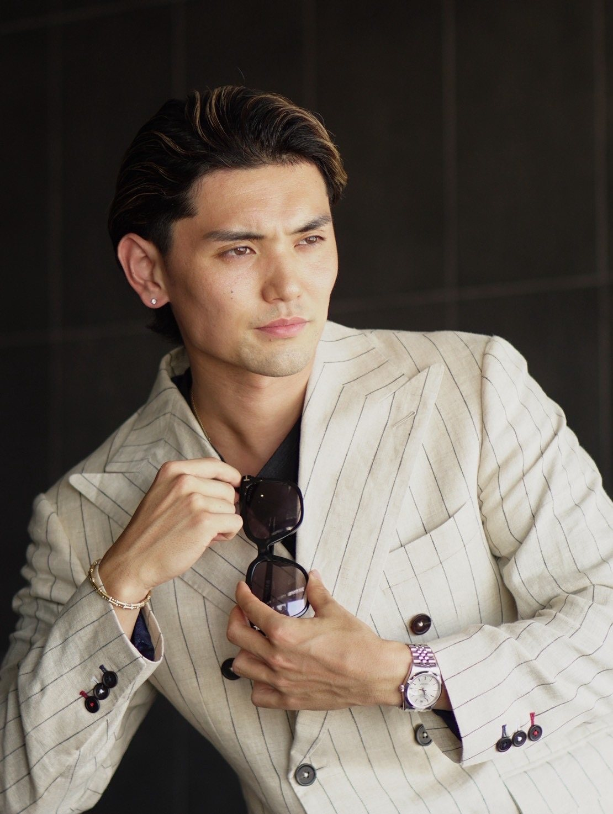

18歳
夢を追いかけた挑戦期
静岡県、清水桜が丘高校サッカー部。
正ゴールキーパーとして活躍し、静岡県高校選抜にも選出。
プロサッカー選手を目指していた。
身体の、その先へ。
目の奥に宿る変化まで導く。

PROFILE
身体づくりを入口に、
延べ300名以上の「人生の変化」に伴走
恋をし、挑戦を始め、
憧れの場所に住む——
そんな瞬間に立ち会い続けている。
MISSION使命
人生を自動から志動に導き、
志ある仲間と共に
粋な日本を創り上げる。
LIFE
私は、「人生を、自動から志動へ導く」
ことを人生のmissionに掲げて生きています。
多くの人は、誰かが決めた常識や環境の中で、
気づかないうちに"自動"で人生を歩んでいます。
でも、本当の人生は、自分の意志で選び、自分の志で生きることで初めて輝き始める。
私が本当に増やしたいのは、
お金持ちではありません。
自分の人生に誇りを持ち、誰かのために挑戦し、人生の最後に「最高の人生だった」と笑える人です。
利益の先にある、生きがいを生きる人を増やす。
日本人が本来持っている精神性と志を、もう一度呼び覚ましていく。
それが、SHINという人間の生き方です。
口先だけではなく、自ら行動で示し、挑戦し続ける姿を届け続けます。
一人でも多くの人が「人生を、自動から志動へ。」と踏み出せるように。
私の人生が終わるその日まで。
ORIGIN
静岡県、清水桜が丘高校サッカー部。
正ゴールキーパーとして活躍し、静岡県高校選抜にも選出。
プロサッカー選手を目指していた。
大学特待を断り、プロサッカー選手の夢を断念。
目標を失い、「自分には何もない」と感じる日々が始まる。
約2年間、飲食店でフリーターとして勤務。
自信を失い、将来の方向性も見えないまま過ごす。
「このままの甘えた自分では人生を積む」と確信する。
4ヶ月で20kgの減量に成功。
フィットネスのステージに立ち、
ワクワクする努力をすれば、人生は変えられると実感する。
そして、周りの支えがあっての自分がいることを、強く知る。
フィットネストレーナーとして活動を開始。
ダイエットの知識だけでは、人は変われないと痛感する。
「続けたくなる仕組み」や「心の在り方」の重要性に気づく。
約1年半の学びを経て、
「SBT1級メンタルコーチ」を最年少で取得。
日本の精神性や伝統に触れたいという強い想いから、日本舞踊に挑戦。
仕事の合間を縫って約6ヶ月間稽古を重ね、
新たな舞台表現を経験する。
18歳から続けてきたジャーナリング。
志や目標、想いを書き続け、自分との約束を守り続けてきた。
だからこそ、今の自分があると確信する。
「書くことで人生は変えられる。」
その想いを形にするため、約1年をかけて志動録ジャーナルを開発。
23歳で、世に送り出す。
志動録ジャーナルを軸に、活動を続けている。
一人でも多くの人が、「自分らしい人生」を歩めるきっかけを届けるために。